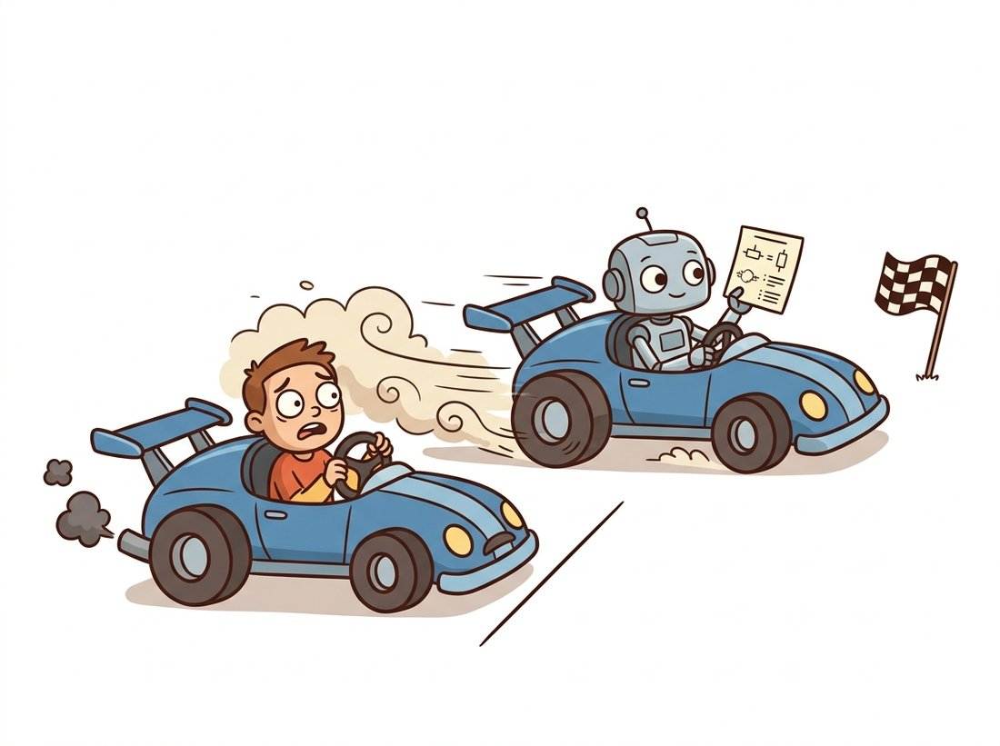

"They asked why I subtract 0.485 from the red channel of every photo before I look at it. I told them a committee in 2009 measured the average redness of a million pictures, and I have simply never been given permission to stop."
A Normalization Layer Honoring an Old Tradition
The dataset is the first and most consequential hyperparameter, and ImageNet, a benchmark from 2009, still silently governs your work through the pretrained weights you download and the exact normalization numbers your preprocessing must use. Nothing the model does downstream can repair a problem upstream in the data: a leaked test set, a biased sampling, or a mismatched preprocessing pipeline will quietly cap or wreck your results no matter how good the architecture is. This section maps the canonical datasets, explains why ImageNet's influence outlived the benchmark itself, shows how to build splits that do not lie to you, and names the leakage and bias traps that catch even careful teams.
You have spent three chapters building and arranging networks. Now we turn to what you feed them, and the order is deliberate: in this chapter data comes first because every later decision (augmentation, transfer, schedule) is downstream of it. In the previous chapter you loaded CIFAR-10 and ImageNet-pretrained backbones almost without comment. This section makes that data explicit. We will see why a handful of datasets became the field's shared yardsticks, why the statistics of one of them are wired into nearly every model you will ever use, and how a subtle split or sampling mistake can produce a validation number that looks wonderful and means nothing. The illustration below captures the spirit of the whole chapter: the architecture is fixed, and the recipe you drive it with decides where you finish.

1. The Canonical Datasets Beginner
A small set of datasets recur throughout deep computer vision, partly because they are good and partly because shared benchmarks let the field compare methods at all. Knowing their shape and their intended task tells you immediately whether a given dataset fits your problem and how long training will take. The most important ones span four orders of magnitude in size, from tiny digit images to millions of web photographs.
| Dataset | Images | Classes | Resolution | Primary task |
|---|---|---|---|---|
| MNIST | 70,000 | 10 | $28 \times 28$ gray | Digit classification (a sanity-check toy) |
| CIFAR-10 / 100 | 60,000 | 10 / 100 | $32 \times 32$ color | Small-image classification, fast experiments |
| ImageNet-1k | ~1.28M | 1000 | variable (~$469 \times 387$) | Classification and pretraining backbone |
| COCO | ~123,000 | 80 | variable | Detection, segmentation, captioning |
| ADE20K | ~25,000 | 150 | variable | Semantic segmentation |
| LAION-5B | ~5.85B pairs | open | variable web | Image-text pretraining (generative, CLIP) |
Table 21.1.1 sketches a clear progression. MNIST and CIFAR are for fast iteration: a model trains in minutes, so they are where you debug a pipeline and test a hypothesis cheaply. ImageNet-1k is the pretraining workhorse, large enough that features learned on it transfer almost everywhere. COCO and ADE20K move beyond a single label per image to the box-, mask-, and pixel-level supervision you will need in Chapter 23 and Chapter 24. The web-scale datasets like LAION power the foundation models of Chapter 25 and the text-to-image systems of Chapter 34. The rule of thumb: prototype on CIFAR, transfer from ImageNet, evaluate on whatever benchmark your task community uses.
The original ImageNet was labeled by tens of thousands of Amazon Mechanical Turk workers across several years, with each candidate image-label pair voted on by multiple annotators. The full database contains over fourteen million images across twenty thousand categories; the famous "ImageNet" that everyone trains on is just the 1000-class subset from the ImageNet Large Scale Visual Recognition Challenge (ILSVRC). When a paper says "pretrained on ImageNet", it almost always means that thin 1.28-million-image slice, not the giant whole.
2. Why ImageNet Still Governs Your Weights Beginner
ImageNet's challenge ended years ago, yet its fingerprints are on nearly every model you build. The reason is transfer learning, which Section 21.3 covers in full: because features learned on ImageNet's 1000 classes turn out to be broadly useful, almost every backbone in Chapter 20 ships with ImageNet-pretrained weights, and you start there rather than from random. That single fact has a precise and easily-missed consequence: a pretrained model expects its inputs preprocessed exactly the way they were during pretraining, which means resized and center-cropped to the training resolution and normalized with ImageNet's per-channel mean and standard deviation.
Those numbers are not arbitrary. They are the channel-wise statistics of the ImageNet training set, $\mu = (0.485, 0.456, 0.406)$ and $\sigma = (0.229, 0.224, 0.225)$ for the red, green, and blue channels of images scaled to $[0, 1]$. Normalization applies the per-channel transform $x' = (x - \mu) / \sigma$, the same standardization idea you met for histograms in Chapter 2, here applied so that the network sees inputs in the distribution it was trained on. Feed it raw 0-to-255 pixels instead and you hand it data from a completely different range; the result, as the practical example below shows, is often near-random output from an otherwise excellent model.
import torch
from torchvision.io import read_image
from torchvision.models import resnet50, ResNet50_Weights
# The weights object carries the EXACT preprocessing it was trained with.
weights = ResNet50_Weights.IMAGENET1K_V2
model = resnet50(weights=weights).eval()
preprocess = weights.transforms()
print(preprocess)
# Expected (abbreviated):
# ImageClassification(
# crop_size=[224], resize_size=[232],
# mean=[0.485, 0.456, 0.406], std=[0.229, 0.224, 0.225], ...)
img = read_image("cat.jpg") # uint8 tensor, shape (3, H, W)
batch = preprocess(img).unsqueeze(0) # resize, crop, scale to [0,1], normalize
with torch.no_grad():
probs = model(batch).softmax(dim=1)
top = probs.argmax(dim=1).item()
print(weights.meta["categories"][top]) # e.g. "tabby, tabby cat"weights.transforms() on ResNet50_Weights.IMAGENET1K_V2 reproduces the exact resize (232), center crop (224), scaling, and ImageNet normalization the model was trained on, which is the only safe way to feed it. The final weights.meta["categories"] lookup turns the argmax index back into a human-readable class name.A pretrained network is a function of a precise input distribution, not just an architecture with weights. The resize resolution, the crop size, and the per-channel normalization are as much a part of the model as any convolution. The single most common cause of "my pretrained model gives garbage" is a preprocessing mismatch between training and inference, and the entire reason weights.transforms() exists is so you cannot get those numbers subtly wrong. Whenever you load pretrained weights, get the preprocessing from the weights, never from memory.
Who: a medical-imaging team adapting an ImageNet-pretrained backbone to classify retinal scans, 2024. Situation: validation accuracy was a strong 91% in the research notebook, and the model was handed to a clinic's image-viewer integration. Problem: in the clinic, accuracy collapsed to near chance, but only on images coming from one particular camera vendor. Decision: the engineer logged the raw pixel histogram of a misclassified clinic image and compared it to a training image. The training pipeline normalized with ImageNet statistics after scaling to $[0, 1]$, but the clinic integration had been wired to feed 16-bit DICOM pixel values (range $0$ to $65535$) straight in, skipping the scale step entirely. Result: inserting the correct scale-then-normalize step in the clinic path restored accuracy to the validation level without retraining a single weight. Lesson: the failure was not in the 25 million learned parameters, it was in two lines of preprocessing. When a strong model fails on real inputs, trace one image's pixel values end to end before you touch the weights.
3. Splits That Do Not Lie Intermediate
The point of holding out data is to estimate how the model behaves on inputs it has never seen. That estimate is only honest if the held-out data is genuinely independent of training, and the standard three-way split exists to protect that independence. The training set fits the weights, the validation set tunes hyperparameters and triggers early stopping, and the test set is touched exactly once, at the very end, to report the final number. The moment you select a model based on its test score, the test set has informed your choices and is no longer an unbiased estimate; it has quietly become a second validation set.
Figure 21.1.1 shows the three roles and the one-way flow of information that keeps each estimate honest.
For small datasets where a single split is noisy, $k$-fold cross-validation reuses the data: partition into $k$ folds, train $k$ times each holding out one fold for validation, and average. The crucial subtlety, and the source of the most common silent bug, is grouping. If your data has natural groups (multiple photos of the same patient, several frames from the same video, augmented copies of one original), every member of a group must land entirely in one split. A naive random split that scatters a patient's scans across train and test lets the model recognize the patient rather than the disease, producing a beautiful test number that evaporates on a genuinely new patient. The code below contrasts the naive split with a group-aware one.
import numpy as np
from sklearn.model_selection import train_test_split, GroupShuffleSplit
# Suppose each row is one X-ray; patient_id groups multiple scans per person.
X = np.arange(1000)
patient_id = np.repeat(np.arange(200), 5) # 200 patients, 5 scans each
# WRONG: scatters a patient's scans across train and test (leakage).
tr, te = train_test_split(X, test_size=0.2, random_state=0)
# RIGHT: keeps every scan of a patient in exactly one split.
gss = GroupShuffleSplit(n_splits=1, test_size=0.2, random_state=0)
tr_idx, te_idx = next(gss.split(X, groups=patient_id))
overlap = set(patient_id[tr_idx]) & set(patient_id[te_idx])
print("patients shared between train and test:", len(overlap))
# Expected: patients shared between train and test: 0train_test_split scatters a patient's five scans across both sides, while GroupShuffleSplit keyed on patient_id guarantees zero patients appear in both train and test, so the reported accuracy reflects generalization to new patients, not memorization of seen ones.4. Leakage and Bias: The Silent Result-Wreckers Intermediate
Data leakage is any path by which information from the evaluation set sneaks into training, and it is insidious precisely because it makes your metrics look better. Beyond the grouping leak above, three patterns recur. Augmentation leakage: if you augment first and split second, augmented copies of one image land on both sides; always split, then augment only the training side. Statistic leakage: if you compute normalization statistics over the entire dataset before splitting, the test set has informed the training preprocessing; compute statistics on the training split only. Temporal leakage: for time-ordered data (video, sensor streams), a random split lets the model peek at the future, so split by time instead.
The diagnostic signature of leakage is a validation or test number that is suspiciously good, often better than published results on the same task, that then collapses in deployment. Healthy generalization is rarely a pleasant surprise. When a result looks too good, the first hypothesis should always be leakage, not genius. Trace exactly how a single test example could share information with training, and you will usually find the leak.
Dataset bias is the quieter cousin of leakage. A model learns whatever correlations are present, including ones you did not intend. The classic cautionary tale is a husky-versus-wolf classifier that achieved high accuracy by detecting snow in the background, because the wolf photos happened to be snowy, not by recognizing the animals at all. ImageNet itself carries geographic and cultural skew (its "groom" and "wedding" images over-represent Western ceremonies), which propagates into every model pretrained on it. The defenses are practical: inspect class balance, view random samples per class, check that the easy-to-vary nuisance factors (lighting, background, camera) are not aligned with the labels, and where possible test on data from a genuinely different source than you trained on.
Building a dataset, a split, and a normalized loader from scratch is dozens of lines of file walking, indexing, and tensor wrangling. torchvision plus a folder convention reduce it to this:
from torchvision import transforms, datasets
from torch.utils.data import DataLoader, random_split
tf = transforms.Compose([
transforms.Resize(232), transforms.CenterCrop(224),
transforms.ToTensor(), # scales to [0,1]
transforms.Normalize([0.485, 0.456, 0.406],
[0.229, 0.224, 0.225]), # ImageNet stats
])
full = datasets.ImageFolder("data/train", transform=tf) # class = subfolder name
train, val = random_split(full, [0.8, 0.2]) # split AFTER loading
loader = DataLoader(train, batch_size=64, shuffle=True, num_workers=4)ImageFolder infers labels from subfolder names and random_split divides the dataset after loading, while the transforms.Compose recipe applies the ImageNet resize, crop, and normalization from Code Fragment 1. Note the split happens after loading, so augmentation can later be confined to the training side.ImageFolder handles directory walking, label inference from folder names, lazy image decoding, and integration with multi-worker loading. The library manages the entire path from disk to a normalized batch tensor; you supply only the transform recipe and the split ratio. For grouped data, swap random_split for an index list built with GroupShuffleSplit as above.
A major 2021-2026 shift has been the move from model-centric to data-centric thinking. Northcutt, Athalye, and Mueller's "Pervasive Label Errors" (arXiv:2103.14749) used confident-learning to find systematic label errors in the test sets of ImageNet, CIFAR, and other staples, with an estimated 6% label-error rate on the ImageNet validation set, errors large enough to reorder model leaderboards. Their cleanlab toolkit and the broader data-centric movement (championed by Andrew Ng's campaigns) argue that on mature tasks, cleaning and curating data yields larger gains than tweaking architectures. The practical upshot for this chapter: the dataset is not a fixed given to optimize against; it is an artifact you should audit, clean, and improve, a theme that returns when generative models become data engines in Chapter 37.
The ImageNet normalization uses mean $(0.485, 0.456, 0.406)$ and standard deviation $(0.229, 0.224, 0.225)$. Explain in your own words (a) why the red mean is the largest of the three, relating it to typical natural-image color statistics, and (b) what numerically happens to a network's first-layer activations if you forget normalization and feed inputs in $[0, 1]$ instead of the standardized range. Connect your answer to the standardization idea from Chapter 2.
Create a synthetic dataset of 100 "patients", each with 5 near-duplicate images (add small noise to a base image). Train a simple classifier twice: once with a naive random split, once with GroupShuffleSplit keyed on patient id. Report both test accuracies. You should observe the naive split reporting markedly higher accuracy. Write two sentences explaining why the gap exists and which number you would trust to predict performance on a brand-new patient.
Pick any 2-class image dataset you can access (or two ImageNet classes). For each class, display 16 random samples and list the recurring backgrounds, lighting conditions, and framing. Identify at least one nuisance factor that is correlated with the label (a background, a watermark, a color cast) and propose a concrete test that would reveal whether your model is using that shortcut rather than the object itself. Relate your test to the husky-versus-wolf cautionary tale in subsection 4.